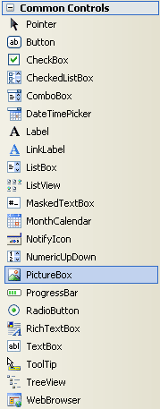
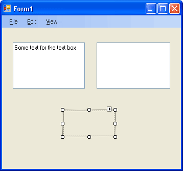
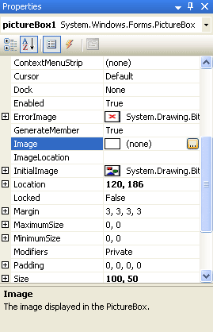
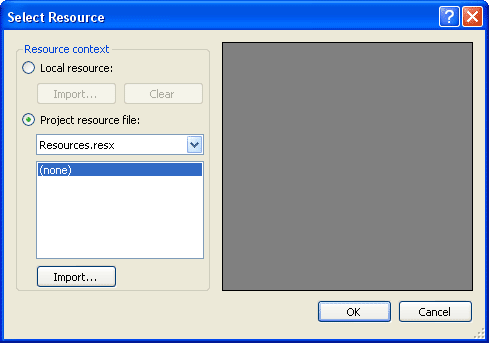
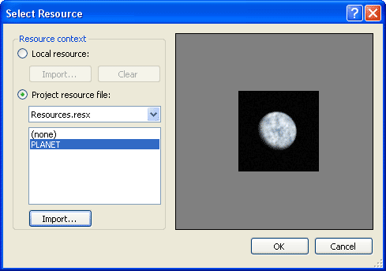
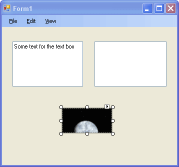
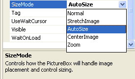
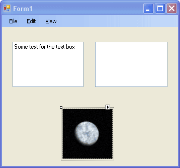

Adding Images in C# .NET
<< Continues from the previous lesson
You have seen the Open File dialogue box countless times. It's the one that appears whenever you click File > Open on a Windows machine. You then navigate through folders, searching for the file you want to open. For our View Images menu, we'll do something slightly more complex - we'll have our own Open File dialogue box that allows you to select images from your computer. When you select an image, it will then appear in a new control on your form.
So we need a place on our form where we can store images. We'll use a Picture Box.
Have a look at the Toolbox on the left hand side of Visual C#. Under Common Controls, locate PictureBox:

Once you've select the PictureBox tool. Click on your form once to add a new PictureBox control. Your form should then look like this:

The PictureBox control is blank when you first add one. To add an image to it at Design Time, have a look at the Properties Window. Locate the Image property:

Click the button with the three dots on it to see a dialogue box appear:

Click the Import button at the bottom and you'll see a standard Open dialogue box. Search your hard drive for a suitable image. Because you have "Project resource file" selected, C# will copy the image to a folder in your project. (This is handy if you want to send your programme to anyone else.)
In the image below, we've gone for a picture of a planet:

Click OK and you'll be taken back to your form:

Notice that the image is too big for the PictureBox. Locate the SizeMode property in the Properties Window:

As you can see, there are a few to choose form. Select AutoSize, and the PictureBox will automatically stretch to the size of your image:

If you run your programme, you'll see the image appear on the form. It won't have a border, though. If you want a border, explore the BorderStyle Property of your PictureBox control.
In the next part, you'll see how to add an Open File dialogue box to a project, allowing you to select any image you want.